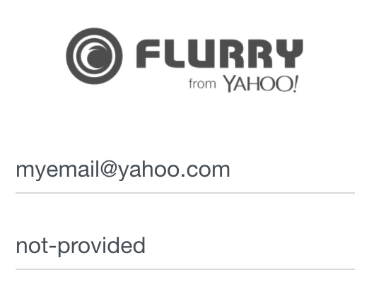

Since this was a simple bug, this is going to be a short write-up. What I hope makes this interesting is the impact, as this could have trivially allowed an attacker access to every Flurry account.
Let's begin...
In taking a look at Yahoo’s bug bounty program, I decided to check out Yahoo's Flurry platform, as it likely doesn’t get as much attention as core Yahoo.
The first step to testing an application, of course, is to create an account. Flurry has two options for creating an account, either to sign up with an email address or with an existing Yahoo account.
I chose to create my account with my Yahoo account, and followed the steps to do so. In the final step to create the account, I immediately noticed something suspicious. Very suspicious. Let's see if you can spot it:
Did you catch it? The value of the password is being explicitly set to the string "not-provided". This couldn’t possibly actually be the user’s password, right?
Let’s find out. If we create a new user by email, the same password parameter is being used. So unless there’s a specific blacklist for "not-provided", then that could very well be the password for every user created with a Yahoo account. Logging in using "not-provided" as my password:
To my surprise, it worked. This allowed for an attacker to log in to any Flurry account connected to Yahoo by entering their email and the password "not-provided". After testing with another brand new account, I promptly reported this to Yahoo, where they quickly triaged it as critical.
Impact
As of 2017, Flurry was used in 940,000 apps and installed on 2.1 billion devices. Even if just some percent of developers have their Yahoo account connected, this would compromise the account of many app developers. Further, as Flurry involves an advertising network, this could have lead to stolen funds from apps.
Resolution
Yahoo provided a fix for this just 5 hours after the report by disabling accounts connected to Yahoo from logging in by email. I verified the fix, but I encourage you to double check it and see if you can find a bypass!
This type of misconfiguration might not be so uncommon. A simple oversight in specifying a user’s password lead to there being a "universal" password in the site. Though the developer intended to communicate that the user should not have a password set, verification was missing to ensure that "not-provided" could not actually be used as a password. This might be interesting to keep an eye out for in other OAuth implementations.
Once again, a fantastic response by Yahoo on this one.
Timeline
6/30/17 17:53 UTC - Reported to Yahoo
6/30/17 19:25 UTC - Initial response + triage by Yahoo
6/30/17 22:51 UTC - Bug fix released by Yahoo
7/01/17 - Bounty decision pending
7/20/17 - Bounty awarded